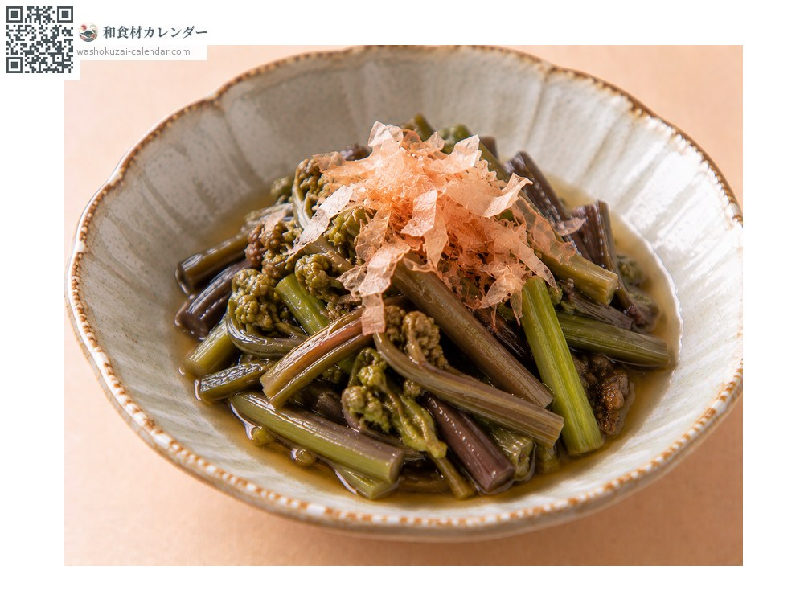
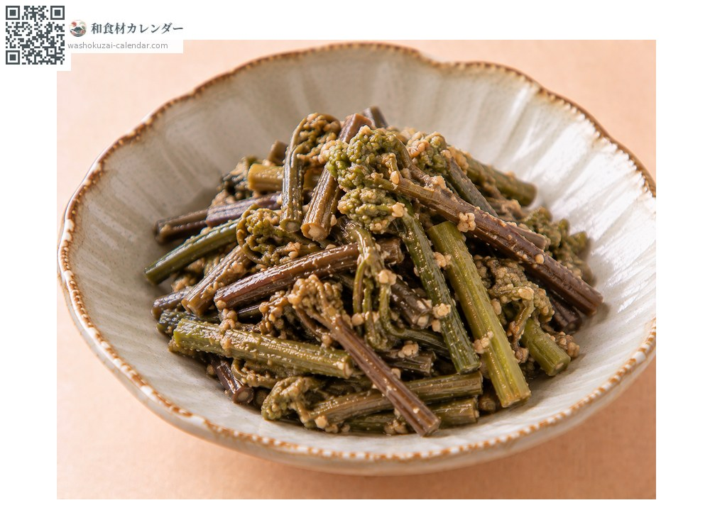
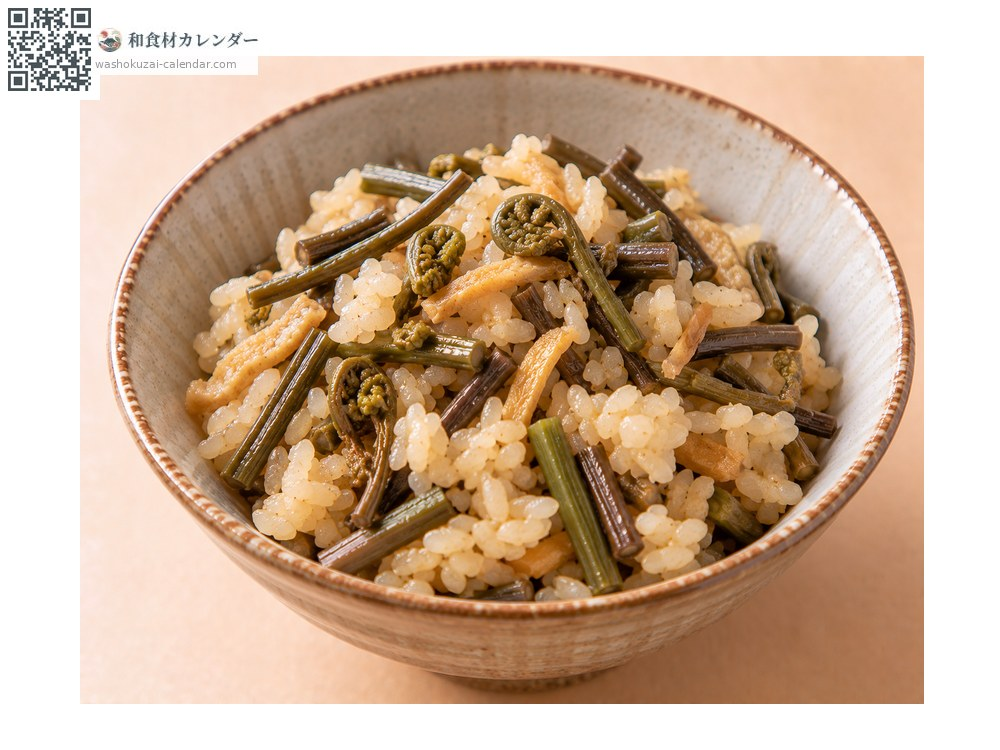
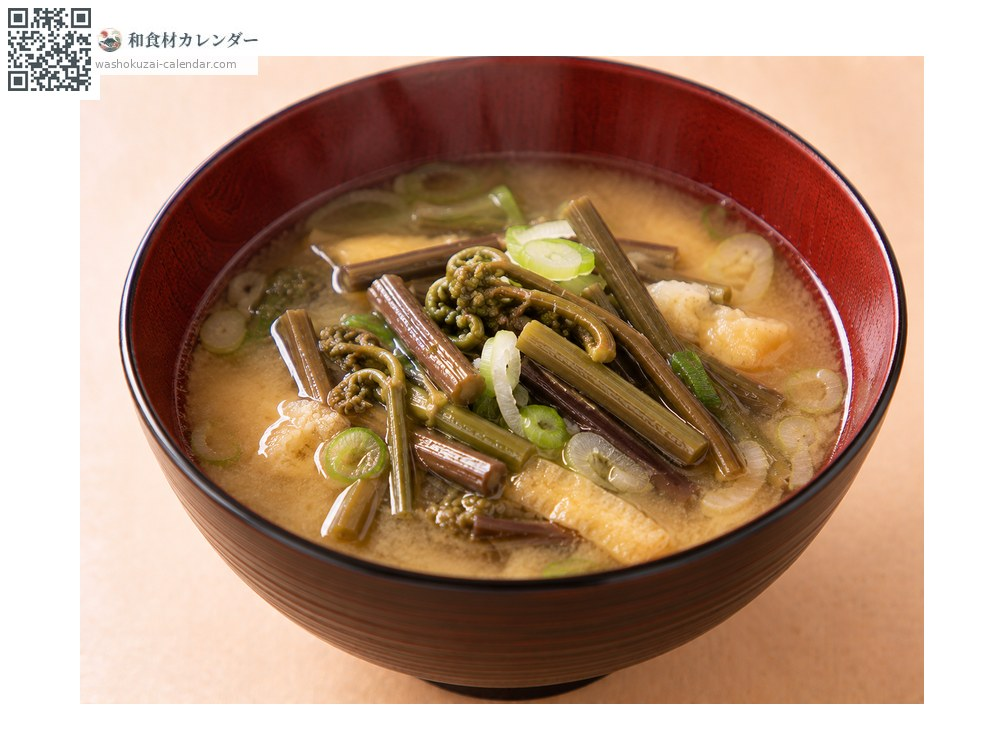

蔬菜
蕨菜
わらび わらび warabi
别名warabi
应季时期为4月、5月

应季时期
1月
2月
3月
4月
5月
6月
7月
8月
9月
10月
11月
12月
应季有供应
烹饪方法

烫青菜
去除涩味后浸在高汤里，独特的黏滑感会出现。

凉拌
用芝麻或味噌凉拌，带有山菜特有的香气。

炊饭
切碎与米同煮，春天的香气会渗进去。

汤品
当味噌汤的汤料，汤会带上稠度。
挑选方法
穗尖仍紧紧卷起、茎粗而笔直。切口水嫩。
保存方法
必须去除涩味。用加了小苏打或木灰的热水浸泡一晚，处理后泡水冷藏。
主要产地
小知识
一定要先去除涩味才能食用。用加了小苏打或木灰的热水浸泡一晚，隔天早上换水。从根茎取出的淀粉就是真正的蕨粉，本是蕨饼的原料，但如今稀少而昂贵。